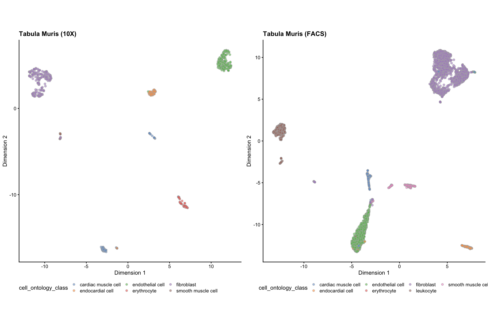
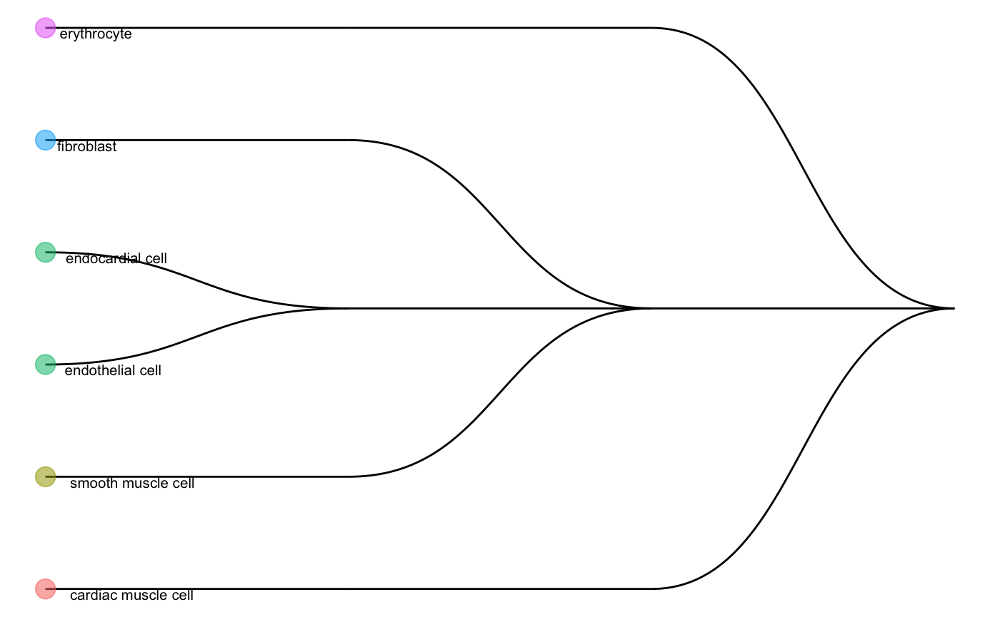
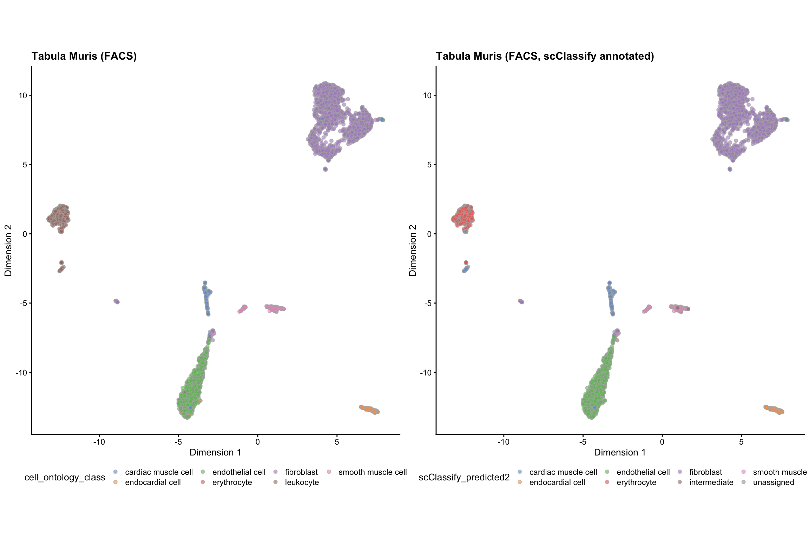

scClassify_TM_heart.RmdThis vignette demonstrates a case study of scClassify, using Tabula Muris data from Heart tissue. The files can be downloaded using the following codes.
download.file("http://www.maths.usyd.edu.au/u/yingxinl/wwwnb/scClassify/Heart_10X.rds", "Heart_10X.rds") download.file("http://www.maths.usyd.edu.au/u/yingxinl/wwwnb/scClassify/Heart_FACS.rds", "Heart_FACS.rds")
Heart_10X <- readRDS("Heart_10X.rds") Heart_FACS <- readRDS("Heart_FACS.rds") Heart_10X #> class: SingleCellExperiment #> dim: 23433 624 #> metadata(1): log.exprs.offset #> assays(1): counts #> rownames(23433): Xkr4 Rp1 ... Tdtom_transgene zsGreen_transgene #> rowData names(0): #> colnames(624): 10X_P7_4_AAACCTGCACGACGAA 10X_P7_4_AAACCTGGTTCCACGG ... #> 10X_P7_4_TTTGTCAGTCGATTGT 10X_P7_4_TTTGTCAGTGCGCTTG #> colData names(4): tissue cell_ontology_class cell_ontology_term_iri #> cell_ontology_id #> reducedDimNames(0): #> altExpNames(0): Heart_FACS #> class: SingleCellExperiment #> dim: 23433 4221 #> metadata(1): log.exprs.offset #> assays(1): counts #> rownames(23433): 0610005C13Rik 0610007C21Rik ... l7Rn6 #> zsGreen_transgene #> rowData names(0): #> colnames(4221): B12.MAA000398.3_9_M.1.1 D16.MAA000398.3_9_M.1.1 ... #> F1.MAA100097.3_38_F.1.1 D8.MAA100097.3_39_F.1.1 #> colData names(4): tissue cell_ontology_class cell_ontology_term_iri #> cell_ontology_id #> reducedDimNames(0): #> altExpNames(0):
The original cell type annotations and compositions of the example datasets can be easily accessed as shown below.
cat("Data from Tabula Muris Heart 10X data") #> Data from Tabula Muris Heart 10X data table(Heart_10X$cell_ontology_class) #> #> cardiac muscle cell endocardial cell endothelial cell erythrocyte #> 83 65 178 55 #> fibroblast smooth muscle cell #> 222 21 cat("Data from Tabula Muris 10X data") #> Data from Tabula Muris 10X data table(Heart_FACS$cell_ontology_class) #> #> cardiac muscle cell endocardial cell endothelial cell erythrocyte #> 140 175 1137 11 #> fibroblast leukocyte smooth muscle cell #> 2052 488 218
scClassify utilises log-transformed (size-factor normalized) matrices as input where each row is a gene and each column a cell for a reference dataset and a query dataset. We will use normalize() in package scater to compute the log-normalize expression values.
Heart_10X <- scater::logNormCounts(Heart_10X) Heart_FACS <- scater::logNormCounts(Heart_FACS)
We can visualise the two datasets using UMAP, coloured by the cell type information.
set.seed(2019) Heart_10X <- scater::runUMAP(Heart_10X) Heart_FACS <- scater::runUMAP(Heart_FACS) g_10X <- plotUMAP(Heart_10X, colour_by = "cell_ontology_class") + theme(aspect.ratio = 1, legend.position = "bottom") + labs(title = "Tabula Muris (10X)") g_FACS <- plotUMAP(Heart_FACS, colour_by = "cell_ontology_class") + theme(aspect.ratio = 1, legend.position = "bottom") + labs(title = "Tabula Muris (FACS)") grid.arrange(g_10X, g_FACS, ncol = 2)

We will perform non-ensemble scClassify by using 10X as our reference dataset and FACS data as ur query data. We use WKNN as the KNN algorithm, DE (differential expression genes) as the gene selection method, and lastly pearson as the similarity calculation method.
scClassify_res <- scClassify(exprsMat_train = logcounts(Heart_10X), cellTypes_train = Heart_10X$cell_ontology_class, exprsMat_test = list(FACS = logcounts(Heart_FACS)), cellTypes_test = list(FACS = Heart_FACS$cell_ontology_class), tree = "HOPACH", algorithm = "WKNN", selectFeatures = c("limma"), similarity = c("pearson"), returnList = FALSE, verbose = FALSE)
We can check the cell type tree generated by the reference data:
scClassify_res$trainRes #> Class: scClassifyTrainModel #> Model name: training #> Feature selection methods: limma #> Number of cells in the training data: 624 #> Number of cell types in the training data: 6 plotCellTypeTree(scClassify_res$trainRes@cellTypeTree)

Noted that scClassify_res$trainRes is a scClassifyTrainModel class.
Check the prediction results for the FACS data.
Heart_FACS$scClassify_predicted <- scClassify_res$testRes$FACS$pearson_WKNN_limma$predRes intermediate_cells <- lapply(strsplit(Heart_FACS$scClassify_predicted, "_"), length) > 1 # renamed the intermediate cell labels to intermediate Heart_FACS$scClassify_predicted2 <- ifelse(intermediate_cells, "intermediate", Heart_FACS$scClassify_predicted) table(Heart_FACS$scClassify_predicted2, Heart_FACS$cell_ontology_class) #> #> cardiac muscle cell endocardial cell endothelial cell #> cardiac muscle cell 127 0 0 #> endocardial cell 0 164 0 #> endothelial cell 0 8 1130 #> erythrocyte 0 0 0 #> fibroblast 7 0 4 #> intermediate 0 3 3 #> smooth muscle cell 0 0 0 #> unassigned 6 0 0 #> #> erythrocyte fibroblast leukocyte smooth muscle cell #> cardiac muscle cell 0 1 46 0 #> endocardial cell 0 1 0 0 #> endothelial cell 4 5 1 1 #> erythrocyte 1 1 430 0 #> fibroblast 6 2040 3 2 #> intermediate 0 3 0 8 #> smooth muscle cell 0 0 0 207 #> unassigned 0 1 8 0
g_FACS_scClassify <- plotUMAP(Heart_FACS, colour_by = "scClassify_predicted2") + theme(aspect.ratio = 1, legend.position = "bottom") + labs(title = "Tabula Muris (FACS, scClassify annotated)") grid.arrange(g_FACS, g_FACS_scClassify, ncol = 2)

sessionInfo() #> R Under development (unstable) (2020-03-25 r78063) #> Platform: x86_64-apple-darwin15.6.0 (64-bit) #> Running under: macOS Catalina 10.15.4 #> #> Matrix products: default #> BLAS: /Library/Frameworks/R.framework/Versions/4.0/Resources/lib/libRblas.0.dylib #> LAPACK: /Library/Frameworks/R.framework/Versions/4.0/Resources/lib/libRlapack.dylib #> #> locale: #> [1] en_AU.UTF-8/en_AU.UTF-8/en_AU.UTF-8/C/en_AU.UTF-8/en_AU.UTF-8 #> #> attached base packages: #> [1] parallel stats4 stats graphics grDevices utils datasets #> [8] methods base #> #> other attached packages: #> [1] gridExtra_2.3 scater_1.15.28 #> [3] ggplot2_3.3.0 SingleCellExperiment_1.9.2 #> [5] SummarizedExperiment_1.17.4 DelayedArray_0.13.7 #> [7] BiocParallel_1.21.2 matrixStats_0.56.0 #> [9] Biobase_2.47.3 GenomicRanges_1.39.3 #> [11] GenomeInfoDb_1.23.14 IRanges_2.21.8 #> [13] S4Vectors_0.25.14 BiocGenerics_0.33.3 #> [15] scClassify_0.2.3 #> #> loaded via a namespace (and not attached): #> [1] segmented_1.1-0 nlme_3.1-145 bitops_1.0-6 #> [4] fs_1.3.2 RcppAnnoy_0.0.16 hopach_2.47.0 #> [7] rprojroot_1.3-2 tools_4.0.0 backports_1.1.5 #> [10] irlba_2.3.3 R6_2.4.1 vipor_0.4.5 #> [13] uwot_0.1.8 mgcv_1.8-31 colorspace_1.4-1 #> [16] withr_2.1.2 tidyselect_1.0.0 proxyC_0.1.5 #> [19] compiler_4.0.0 BiocNeighbors_1.5.2 desc_1.2.0 #> [22] labeling_0.3 diptest_0.75-7 scales_1.1.0 #> [25] proxy_0.4-23 pkgdown_1.5.0 stringr_1.4.0 #> [28] digest_0.6.25 mixtools_1.2.0 rmarkdown_2.1 #> [31] XVector_0.27.2 pkgconfig_2.0.3 htmltools_0.4.0 #> [34] limma_3.43.5 rlang_0.4.5 rstudioapi_0.11 #> [37] FNN_1.1.3 DelayedMatrixStats_1.9.0 farver_2.0.3 #> [40] dplyr_0.8.5 BiocSingular_1.3.2 RCurl_1.98-1.1 #> [43] magrittr_1.5 GenomeInfoDbData_1.2.2 Matrix_1.2-18 #> [46] ggbeeswarm_0.6.0 Rcpp_1.0.4.5 munsell_0.5.0 #> [49] viridis_0.5.1 lifecycle_0.2.0 stringi_1.4.6 #> [52] yaml_2.2.1 ggraph_2.0.2 MASS_7.3-51.5 #> [55] zlibbioc_1.33.1 grid_4.0.0 ggrepel_0.8.2 #> [58] crayon_1.3.4 lattice_0.20-40 cowplot_1.0.0 #> [61] graphlayouts_0.6.0 splines_4.0.0 knitr_1.28 #> [64] pillar_1.4.3 igraph_1.2.5 codetools_0.2-16 #> [67] glue_1.3.2 evaluate_0.14 RcppParallel_5.0.0 #> [70] vctrs_0.2.4 tweenr_1.0.1 gtable_0.3.0 #> [73] purrr_0.3.3 polyclip_1.10-0 tidyr_1.0.2 #> [76] kernlab_0.9-29 assertthat_0.2.1 xfun_0.12 #> [79] ggforce_0.3.1 rsvd_1.0.3 tidygraph_1.1.2 #> [82] RSpectra_0.16-0 survival_3.1-11 viridisLite_0.3.0 #> [85] minpack.lm_1.2-1 tibble_2.1.3 beeswarm_0.2.3 #> [88] memoise_1.1.0 cluster_2.1.0 statmod_1.4.34